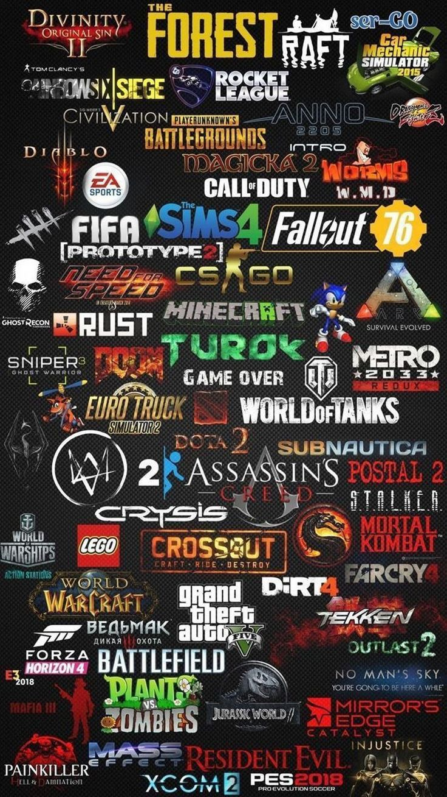

Os jogos mais populares do PlayStation 2

O PlayStation 2 (PS2) é um console de videogame doméstico desenvolvido e fabricado pela Sony Computer Entertainment . Foi lançado oficialmente em 4 de março de 2000 no Japão, em 26 de outubro de 2000 na América do Norte e em 24 de novembro de 2000 na Europa.
Sucessor do PlayStation original, o PS2 chegou ao mercado com gráficos impressionantes para a época, suporte a DVDs e uma biblioteca de jogos que cresceu para mais de 4.000 títulos. Vendeu mais de 155 milhões de unidades até o fim de sua produção em 2013, tornando-se o console mais vendido da história dos videogames.
| Componente | Especificação |
|---|---|
| Processador (CPU) | Emotion Engine a 294,912 MHz |
| Processador Gráfico (GPU) | Graphics Synthesizer a 147,456 MHz |
| Memória RAM | 32 MB RDRAM |
| Mídia | CD-ROM / DVD-ROM |
| Resolução máxima | 1280 x 1024 pixels |
| Controle | DualShock 2 |
| Memória de save | Memory Card (8 MB) |
A série GTA explodiu em popularidade no PS2. Com GTA III, Vice City e San Andreas, a Rockstar redefiniu o que era possível em um jogo de mundo aberto.
Kratos estreou no PS2 em 2005 e entrou direto para o hall da fama dos videogames. God of War II (2007) é considerado por muitos o melhor jogo do PS2.
Hideo Kojima entregou obras-primas no PS2: Metal Gear Solid 2 e Metal Gear Solid 3: Snake Eater. A série é conhecida por narrativas cinematográficas e mecânicas de stealth inovadoras.
Silent Hill 2 é amplamente considerado o melhor horror psicológico já feito. A névoa, os monstros e o roteiro perturbador marcaram toda uma geração.
O PS2 recebeu títulos marcantes: Final Fantasy X, Final Fantasy XII e Kingdom Hearts II, que misturava mundos da Disney com a magia dos RPGs japoneses.